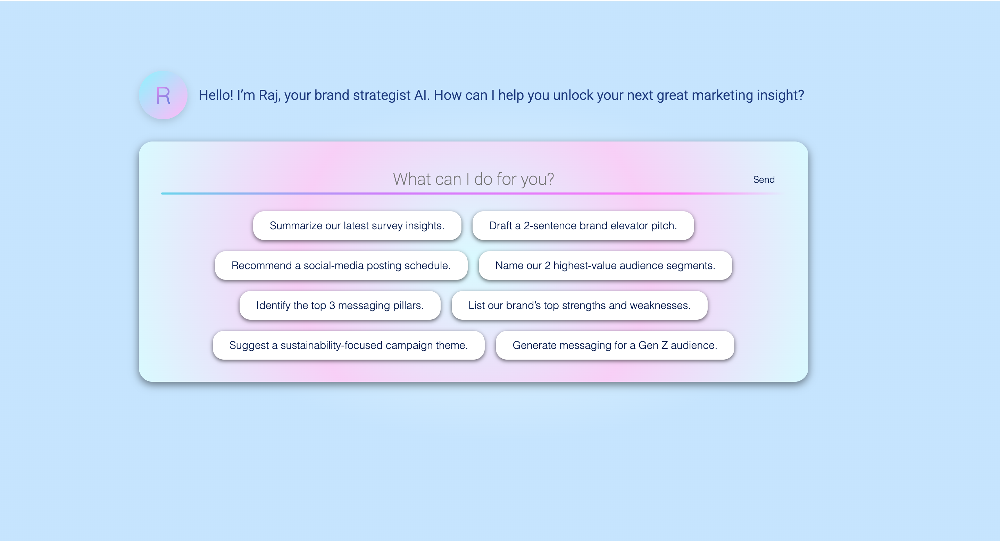
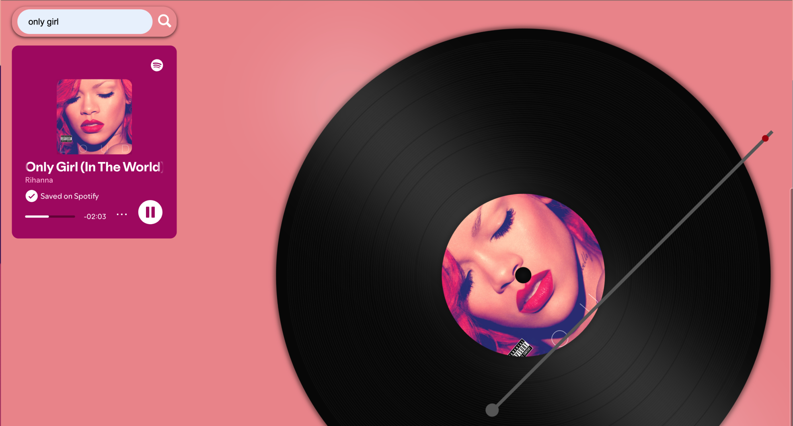
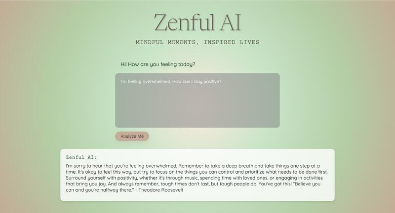

Kalyani Panambalom
Computer Science student
Personal Projects
-

Raj Chat AI Assistant
Raj Chat lets you ask marketing and brand-strategy questions through a sleek Angular interface, sending your input to a FastAPI backend that forwards your query to OpenAI's GPT-3.5-turbo model. It also offers handy presets, a custom input field, secure API-key integration, and persistent chat history in SQLite via SQLModel.
-

Digital Vinyl Player
A web-based music player that combines the nostalgia of vinyl records with modern streaming, allowing users to play music via Spotify and watch a dynamic vinyl animation in sync with their tracks. Built with HTML, CSS, JavaScript, and the Spotify Web API.
-

Zenful AI
Zenful AI is an interactive mental-wellness assistant built with Python, Flask, HTML, CSS, and JavaScript. It uses the OpenAI API to provide empathetic, emotion-aware conversations and delivers a personalized inspirational quote at the end of each session.